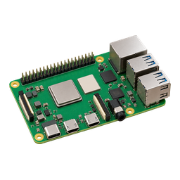

ESP32 · slots
ESP32 · slotsO que acontece

Fase no servidorA versão atual · em usoB ocioso
1Oferta pelo WebSocket
versão, tamanho, SHA‑256 e tentativa. A placa recusa se já estiver atualizando, em modo de configuração, conectada pela malha, sem Wi‑Fi, com versão menor ou imagem maior que o slot.
ofertado
A versão atualB nova · próximo boot
3Troca do slot de boot e reinício
a imagem conferida passa a ser a de boot; a tentativa e o SHA‑256 ficam na NVS.
gravadoreiniciando
A versão atualB nova · em uso, a validar
4Autoteste em até 90 s
LittleFS montado, Wi‑Fi (ou a malha) e canal com o servidor aberto. A placa reconecta já com a versão nova.
validando
Passou
concluidoA ociosoB nova · válida
a placa marca a imagem como válida e envia ota_validado com a tentativa, o SHA‑256 e a versão.
Não passou
falhou · rollbackA versão atual · em usoB inválida
a placa marca a imagem como inválida e reinicia no slot anterior; o servidor vê a versão antiga voltar.
Prazos do servidor: 4 min para a transferência, 3 min para a placa voltar depois de gravar e 4 min para a evidência de boot. Estourado um prazo, a OTA fica como falha. Evidência de boot: firmware 4.2.0 ou mais novo.